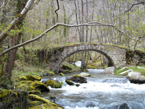
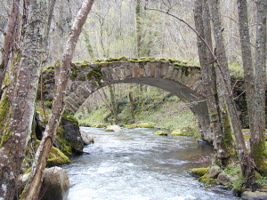
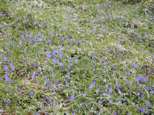
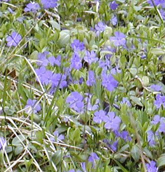

Le pont de Riberolles qui permet de franchir la Monne.
C'est là que les villageois avaient installé leurs cultures et leurs vergers.
Les pervenches tapissent le versant sud, à proximité du pont.


Si vous entrez directement :
Vers l'entrée du site, cliquez ici